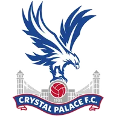
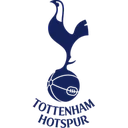

Кристал Пэласдома, 20-е местоКристал Пэлас — Халл Сити прогноз на матч 29 ноября
Расчёт модели
- 1,4 : 1,1ожидаемые голы
- 55 %тотал больше 2,5
- 58 %обе забьют
Кэфы на матч
- П11,97
- Х3,76
- П23,88
Тотал 2,5: больше 1,80, меньше 2,09
Это справка, не рекомендация.
Цифры считает модель по данным сайта, а не эксперт. Это вероятности, а не гарантия исхода. Как считает модель · словарь терминов.
- ТурнирАПЛ
Коротко о матче
По форме команды близки: в пяти последних матчах у обеих по 1 победе. Слабое место — оборона: Кристал Пэлас — в среднем 2,0 пропущенного мяча за игру в этих пяти матчах, так что у соперника будут моменты.
Стоит учесть и площадку: дома Кристал Пэлас — 3 победы в 8 матчах, на выезде Халл Сити — 1 победа в 5.
По расчёту модели фаворит — Кристал Пэлас: 51 % на победу. Это оценка по данным, а не обещание исхода.
Стартовые составы
- 1Хендерсон
- 6Канво
- 5Дисаси
- 26Ричардс
- 3Митчелл
- 23Тимбер
- 20Уортон
- 25Халили
- 18Камада
- 11Макнил
- 22Ларсен
Ожидаемый состав по данным FotMob — с учётом травм и дисквалификаций. Официальный появится примерно за час до начала.
- 19Цолакис
- 2Койл
- 6Аджайи
- 32Менди
- 21Струд
- 27Slater
- 29Гурна-Дуат
- 10Беллуми
- 25Крукс
- 7Томас
- 9Макберни
Ожидаемый состав по данным FotMob — с учётом травм и дисквалификаций. Официальный появится примерно за час до начала.
Не сыграют
 Кристал Пэлас
Кристал Пэлас
- Риадтравма, вернётся в конце июня
- Томиясутравма, вернётся в конце ноября
- Пинодисквалификация, вернётся в конце ноября
- Сарртравма, вернётся в конце ноября
- Матетадисквалификация, вернётся в конце ноября
 Халл Сити
Халл Сити
- Hughesтравма, вернётся в конце ноября
- Таргетттравма, вернётся в середине декабря
- Матазотравма, вернётся в начале февраля
- Моритатравма, вернётся в конце ноября
- Ансатравма, вернётся в начале декабря
- Гелхардттравма, вернётся в середине декабря
- Айрогбунамтравма, вернётся в конце февраля
Травмы и дисквалификации на этот матч, по данным FotMob. Обновляется несколько раз в день.
Отдых и расписание
У хозяев 2 дня отдыха, у гостей 7 дней отдыха.
Кристал Пэласхозяева
- 2дня отдыхаменьше 3 дней — мало
- 2матча за 7 днейвключая этот
- 2-йдомашний матч подряд
- 3дня до следующегоЧелси
Прошлый матч: 26.11, Кристал Пэлас — Реал Сосьедад 2:1
Халл Ситигости
- 7дней отдыха
- 1матч за 7 днейвключая этот
- 1-йвыездной матч подряд
- 3дня до следующегоНоттингем Форест
Прошлый матч: 22.11, Халл Сити — Брайтон 2:0
Отдых считаем от начала прошлого матча. Еврокубок через 3–4 дня после матча — частая причина ротации.
Форма: последние матчи
Кристал Пэлас 1 победа из 5

П0:2 Н1:1
Н1:1 П1:3
П1:3- П2:3
 В2:1
В2:1
Халл Сити 1 победа из 5
 П0:1
П0:1- Н1:1
 Н2:2
Н2:2 П0:1
П0:1 В2:0
В2:0
Кто в форме
Больше всего голов и передач в последних матчах команды (все турниры).
Кристал Пэласза 5 последних матчей
| Игрок | Г | П | Г+П |
|---|---|---|---|
| Йёрген Странн Ларсен | 1 | 2 | 3 |
| Ереми Пино | 1 | 1 | 2 |
| Даити Камада | 1 | 0 | 1 |
| Дуайт Макнил | 1 | 0 | 1 |
| Жан-Филипп Матета | 1 | 0 | 1 |
Халл Ситиза 5 последних матчей
| Игрок | Г | П | Г+П |
|---|---|---|---|
| Оливер Макберни | 4 | 1 | 5 |
| Тим Айрогбунам | 1 | 0 | 1 |
| Люка Гурна-Дуат | 0 | 1 | 1 |
| Мохамед Беллуми | 0 | 1 | 1 |
Дома и в гостях
Хозяева — в своих домашних матчах, гости — в выездных. Чемпионат этого сезона.
| Матчей | 5 | 5 |
|---|---|---|
| Побед | 1 из 5 | 1 из 5 |
| Ничьих | 0 | 1 |
| Забивают за игру | 1,4 | 0,8 |
| Пропускают за игру | 2,6 | 1,2 |
| Тотал больше 2,5 | 80% | 40% |
| Обе забили | 80% | 40% |
| «Сухих» матчей | 0% | 20% |
Жирным — лучшее из двух.
Положение в таблице
| Команда | Место | И | В | Н | П | Голы | Очки |
|---|---|---|---|---|---|---|---|
| 20 | 11 | 2 | 1 | 8 | 12:27 | 7 | |
| 11 | 11 | 3 | 5 | 3 | 13:11 | 14 |
Куда дальше
Материалы носят информационный характер и не гарантируют результат. Реклама букмекеров на сайте не размещается. Сайт только для совершеннолетних (18+).